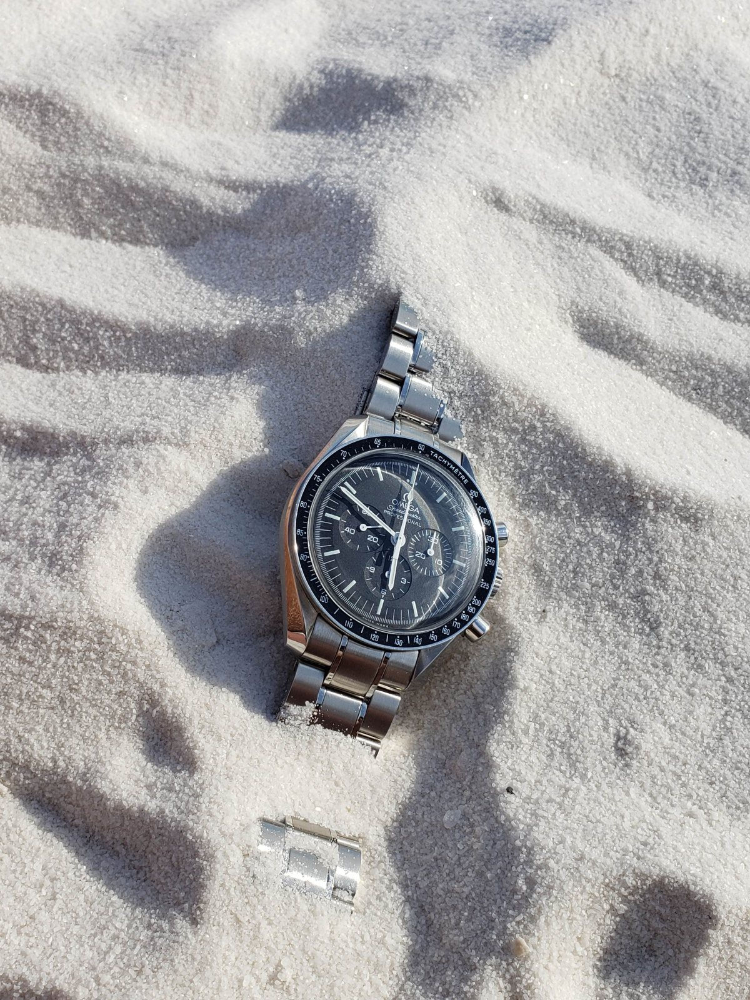

Eleven Myths of Watch Collecting
Everything the forums told you, corrected by someone who has seen people fall for it.

Speedmaster Professional, White Sands, New Mexico. The stray link in the corner is not a metaphor. It just fell off.
MythWatches are an investment.
So is a boat, if you never do the math. A handful of steel sports watches went up in value and the entire internet decided that made watches an asset class. Everything else went the way of your car: down, then to a service bill.
Buy the watch because you want the watch. If it appreciates, that's a bonus, not a strategy. Your retirement plan should not have a tachymeter.
Verdict: it's a purchase, not a position.MythPeople care about what's on your wrist.
They don't. The only people who will ever notice your watch are other watch people, and they notice it the way pigeons notice other pigeons. Everyone else sees "a watch," assumes it's an Apple one, and gets on with their life.
This is liberating. Wear what you like. Nobody's looking.
Verdict: the audience is you.MythQuartz watches aren't real watches. (Or: they're inferior.)
Quartz is more accurate, more durable, cheaper, and never needs winding. My G-Shock GW-M5610 listens for a radio time signal every night and corrects itself; it will be right to the second for as long as the transmitters keep transmitting, which is longer than I'll be around to check. It has been dropped, frozen, and taken swimming. It does not care.
The only thing a mechanical movement does better is be charming — a tiny engine that works because someone in 1755 was stubborn.
I own mostly mechanical watches, and several G-Shocks I would grab first in a fire. That says something about me. It says nothing about quartz.
Verdict: a watch that tells time is a watch.MythMore expensive is better.
Past a certain point, price buys you a story, a boutique, and a man in white gloves. It doesn't buy you more time. A $300 Seiko and a $30,000 something-or-other both say quarter past four, and only one of them is coming to the beach.
Verdict: price measures scarcity, not joy.MythA nice watch attracts women.
Field data, collected over many years: a watch will get you approached by women approximately zero times, and by a man named Dave roughly once a month. Dave wants to talk about his Submariner. Dave has photos.
If you're buying a watch to find a partner, congratulations — you're about to have a lot of new friends named Dave.
Verdict: chances are you'll attract more men.MythGrand Seikos are just expensive Seikos.
Sure, and a Lexus is an expensive Toyota. Grand Seiko has its own studios, its own movements, hand-finishing most Swiss brands can't match at the price, and a dial department that is clearly having more fun than the rest of the industry.
The Seiko name isn't a discount. It's the pedigree — a company that has been making serious watches since 1881 and put quartz on the world's wrist in 1969. Grand Seiko is that history with the finishing turned all the way up.
Verdict: different company, same last name.MythSmall case diameters are for women.
Tell that to Paul Newman, Steve McQueen, and every man in every photograph taken before 2005. Watches got enormous for about fifteen years, and then everybody remembered they have wrists.
36mm was the standard men's size for a century. It still fits. And the number that decides whether a watch wears well isn't the diameter anyway — it's lug-to-lug. Nobody puts that on the box.
Verdict: small is a size, not a gender.MythIt's a hobby for the rich.
My HMT Janata cost less than dinner. Hand-wound, made in India, bright yellow, still keeps time, and gets more comments than anything else I own.
Money lets you buy expensive watches. It doesn't make you a collector. Curiosity does, and that's free.
Verdict: the entry fee is interest.MythYou need a big collection to be a collector.
One watch you chose on purpose makes you a collector. Forty watches you bought on impulse makes you a warehouse. Some of the most interesting collectors I know own three, and can tell you exactly why each one is there.
Verdict: it's the why, not the count.MythTudor is a poor man's Rolex.
I own both. They are not the same watch with a different crown on the dial, and I'm not sure the “poor man” part holds up either — Tudor has been quietly edging toward the early five-figure mark, and the used-Rolex crowd is starting to notice.
What you actually get is a company that tries things its older sibling won't: titanium divers, in-house chronographs with a panda dial, a bracelet clasp that adjusts on the fly. Rolex refines. Tudor experiments. Different jobs, same family — the one who took the safe career and the one who didn't.
If you want a Rolex, buy a Rolex. If you want a Tudor, you're not settling. You're choosing.
Verdict: not a consolation prize. A different watch.MythRolex or bust.
Rolex makes excellent, sensible watches, and there is nothing wrong with excellent or sensible. But the hobby lives elsewhere: in a Kurono from a workshop in Tokyo, a Havaan Tuvali with a dial like a 1930s train station, a Seiko drawn by the man who designed the DeLorean, a $30 HMT that refuses to die.
Rolex is the front door. Nobody interesting stays in the hallway.
Verdict: it's a starting point, not the point.The one true thing: buy the watch you'd wear on a Tuesday, when nobody is looking. Because — see myth two — nobody is.